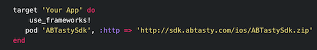

Welcome
Welcome to the AB Tasty for app ABTastySdk documentation!
The ABTastySDK project is an iOS Framework that helps you to make server side tests on your native iOS app.
You can use this FrameWork to access AB Tasty endpoints, which can generate a unique visitor ID, allocate a visitor to a test, and push visits and conversions events in order to help you analyze the outcomes of your campaigns.
Should you have any question about this documentation, feel free to reach out to us.
App prerequisites
Your app must be a native app written in Swift or Objective C.
ABTastySdk support minimum ios 8.0+
Getting started
ABtastySDK is available through Pods and manual installation.
Cocoapods
Open Terminal and navigate to the directory that contains your project then enter the folowing command: `pod init
Open your Podfile and add the following line to the Podfile
Make sure use_frameworks! is also included in the Podfile:

Run
pod installfrom your Xcode project's base directoryMake sure to always open the Xcode workspace instead of the project file when building your project
Manual Installation
Download the frameWork ABTastySdk.framework.
In Finder, navigate to the ABTastySdk.framework file and drop it under your "Embedded Binaries" section in Xcode
After this manipulation, a popup will open, into it, don't forget to check "Copy items if needed".
Apple Store Submission
If you have universal framework installed in your application, apple store will reject your app because unwanted architecture. You need to Add a Run Script step to your build steps, put it after your step to embed frameworks, set it to use /bin/sh
and enter the following script:
FRAMEWORK="ABTastySdk"
FRAMEWORK_EXECUTABLE_PATH="${BUILT_PRODUCTS_DIR}/${FRAMEWORKS_FOLDER_PATH}/$FRAMEWORK.framework/$FRAMEWORK"
EXTRACTED_ARCHS=()
for ARCH in $ARCHS
do
lipo -extract "$ARCH" "$FRAMEWORK_EXECUTABLE_PATH" -o "$FRAMEWORK_EXECUTABLE_PATH-$ARCH"
EXTRACTED_ARCHS+=("$FRAMEWORK_EXECUTABLE_PATH-$ARCH")
done
lipo -o "$FRAMEWORK_EXECUTABLE_PATH-merged" -create "${EXTRACTED_ARCHS[@]}"
rm "${EXTRACTED_ARCHS[@]}"
rm "$FRAMEWORK_EXECUTABLE_PATH"
mv "$FRAMEWORK_EXECUTABLE_PATH-merged" "$FRAMEWORK_EXECUTABLE_PATH"
Initialize ABTastySDK
Add the following code into your AppDelegate.m file
- (BOOL)application:(UIApplication *)application didFinishLaunchingWithOptions:(NSDictionary *)launchOptions {
[[ABTasty sharedInstance] startABTastySdk:@"YOUR_ACCESS_KEY"];
return YES;
}
func application(_ application: UIApplication, didFinishLaunchingWithOptions launchOptions: [UIApplicationLaunchOptionsKey: Any]?) -> Bool {
ABTasty.sharedInstance().startSdk("YOUR_ACCESS_KEY")
return true
}
To run experiments with ABTasty you'll need to initialize ABTasty with AB_TASTY_KEY. ABTasty instance can both allocate, activate experiments and track events.
To do this, you just have to call the function startABTastySdk in the ABTasty class located in the frameWork ABTastySdk.framework. For each new user, at the very first initialization, the SDK is going to ask for a new visitor id to our servers and save it in a user Default
(void)startABTastySdk:(NSString*)appId
| Parameter | Type | Description |
|---|---|---|
| appId | NSString | Access key provided by AB Tasty |
Initialize with Tracking data
[[ABTasty sharedInstance] startABTastySdk:@"YOUR_ACCESS_KEY" WithTrackingInfos:
@{@"adel":@1,
@"Longitude":@2.3333,
@"Latitude": @48.48,
@"ipAddress":@"192.168.1.1"
}];
ABTasty.sharedInstance().startSdk("YOUR_ACCESS_KEY", withTrackingInfos:
["Longitude":2.3333, "Latitude":48.48,,"ipAddress":"192.168.1.1"])
- (void)startABTastySdk:(NSString*)appId WithTrackingInfos:(NSDictionary*)pInfosTracking
This method allows you to set common default tracking data that you want to share between all your events.
| Parameter | Type | Description |
|---|---|---|
| appId | NSString | Access key provided by AB Tasty |
| pInfosTracking | NSDictionary | infos tracking for common default data |
COMMON TRACKING INFORMATIONS
| Parameter | Type | Description |
|---|---|---|
| Longitude | Double | Longitude |
| Latitude | Double | Latitude |
| ipAddress | NSDictionary | ip adress |
Starting campaigns
This section of the documentation aims to help you to start a new campaign in your app using the ABTasty SDK.
Allocate Camapign
Once you get your visitor id, you can allocate campaign by calling allocateVariation function
Allocate one campaign
ABTasty.sharedInstance().allocateVariation("campaignId") { ( variationId,error) in
if let error = error {
print (error)
} else if let variationId = variationId {
if(variationId == "varId1"){
// Execute code for varId1
}else if (variationId == "varId2"){
// Execute code for varId2
}
}
}
[[ABTasty sharedInstance] allocateVariation:@"campaignId" completionBlock:^(NSString * variationId,NSError* error) {
if (error){
NSLog(@"%@", error.description);
}
else
{
if([variationId isEqualToString:@"varId1"]){
// Execute code variation for varId1
}else if ([variationId isEqualToString:@"varId2"]){
// Execute code variation for varId2
}
}
}];
- (void)allocateVariation:(NSString*)pIdCampaign completionBlock:(void(^)(NSString*,NSError*))pOnGetVariationId
It uses the campaign id and a block as parameters which is going to be invoked when a variation is allocated to this campaign.
| Parameter | Type | Description |
|---|---|---|
| pIdCampaign | String | id of the campaign |
| pOnGetVariationId | block | block to be invoked when a variation is selected for this campaign. |
Allocate Sevral Camapigns
Allocate sevral campaign with simple call
[[ABTasty sharedInstance] allocateVariations:[NSArray arrayWithObjects:@"campaignId1",@"campaignId2",@"campaignId3",@"campaignId3", nil] completionBlock:^(NSArray<ABCampaign *> *variationIdArray) {
if (variationIdArray) {
// Here in this array you have all the varaitionID with their camapignId in the ABCampaign Object
}
}];
ABTasty.sharedInstance().allocateVariations(["campaignId1","campaignId2","campaignId3","campaignId4","campaignId5"]) { (arrayCampaign) in
if let arrayCampaign = arrayCampaign{
for item:ABCampaign in arrayCampaign{
// Here in this array you have all the varaitionID with their camapignId in the ABCampaign Object
}
}
}
You can also allocate sevral campaign with simple call function allocateVariations, the completion block pOnGetAllVariationId invoke with ABCampaign object
- (void)allocateVariations:(NSArray<NSString*>*)pIdCampaignArray completionBlock:(void(^)(NSArray<ABCampaign*>*))pOnGetAllVariationId
| Parameter | Type | Description |
|---|---|---|
| pIdCampaignArray | NSArray | array of campaign id |
| pOnGetAllVariationId | block | block to be invoked when all variations is selected for those campaigns. |
Activate Campaign
[[ABTasty sharedInstance] activateCampaign:@"campaignId" forVariationId:varId];
ABTasty.sharedInstance().activateCampaign("campaignId", forVariationId: "varId")
Once a variation has been allocated to a campaign you need to activate it. This way it tells AB Tasty that the current user saw this specific variation of the campaign so that the user always sees the same variation.
The allocation can be changeg if you call allocateVariation several times until you use activateCampaign to activate the campaign and freeze the variation.
@See activateCampaign in the tracking section
Sending events
The library also provides some functions to send events to ABTasty, for example to send objectives configured for a campaign.
To do so, use the sendTrackingEvent method and specify the expected tracker as a parameter.
All existing trackers are listed below.
ABTracking
ABTracking is the generic tracker that contains common data and from which all others trackers inherit.
| Parameter | Type | Description |
|---|---|---|
| device_type | ABDeviceType | Device used by the visitor to view the test. The devices currently supported are: "DESKTOP", "MOBILE", "TABLET", "CAMERA", "TV", "GAMES_CONSOLE", "PAYMENT_TERMINAL", "WRISTWATCH", and "OTHER". required |
| interfaceName | String | interface or page from where the event has been created required |
| longitude | double | longitude of the device for geolocation optional |
| latitude | double | Â latitude of the device for geolocation optional |
| ipAdress | String | current ip of the device optional |
Campaign Activation Tracking
val tracker = ABCampaignActivationTracker.Builder()
.setCampaignId("xxxxxx")
.setVariationId("bbbbbbb")
.setOrigin("LoginActivity")
.setDeviceType(DeviceType.MOBILE_PHONE)
.setTimestamp(System.currentTimeMillis() / 1000)
.build()
ABTasty.sendTrackingEvent(tracker)
ABCampaignActivationTracker activation = new ABCampaignActivationTracker.Builder()
.setCampaignId("xxxxxx")
.setVariationId("bbbbbb")
.setOrigin("LoginActivity")
.setDeviceType(DeviceType.MOBILE_PHONE)
.setTimestamp(System.currentTimeMillis() / 1000)
.build();
ABTasty.Companion.sendTrackingEvent(activation);
This tracker activates a campaign and its variation.
| Parameter | Type | Description |
|---|---|---|
| campaign_id | String | campaign id to be activated required |
| variation_id | String | variation id of the campaign to be activated required |
Action Tracking
Send Action Tracking Event
ABActionTracking * action = [[ABActionTracking alloc] initABTracking:ABMobile longtitude:2.33 latitude:48.48 ipAdress:@"912.168.1.1" interfaceName:@"ABHomeViewController"];
action.name = @"MyGoal";
action.position_X = 12;
action.position_Y = 12;
action.value = @"value";
// Send Action Tracking
[[ABTasty sharedInstance] sendTrackingEvent:action];
let action :ABActionTracking = ABActionTracking(abTracking:ABDeviceType.mobile, longtitude: 2.33, latitude: 48.48, ipAdress: "192.168.1.1", interfaceName: "ABHomeViewController")
action.name = "MyGol"
action.value = "value"
action.position_X = 12
action.position_Y = 12
// Send Action tracking
ABTasty.sharedInstance().sendTrackingEvent(action)
ABActionTracking, This tracker sends touch event
| Parameter | Type | Description |
|---|---|---|
| name | String | Label of the click tracking/touch as displayed in the reporting. required |
| type | ActionType | Type of event CLICK or TOUCH required |
| value | id | value attached to the action tracking event. Only NSString or NSNumber are accpeted. optional |
| position_X | float | Object that contains the position x where the touch occurred in the mobile screen. required for TOUCH |
| position_Y | float | Object that contains the position y where the touch occurred in the mobile screen. required for TOUCH |
Custom Tracking
ABCustomEvent * customEvent = [[ABCustomEvent alloc] initABTracking:ABMobile longtitude:2.33 latitude:48.48 ipAdress:@"192.168.1.1" interfaceName:@"ABHomeViewController"];
[customEvent setValue:@"value"];
[customEvent setGoal_name:@"GoalName"];
[[ABTasty sharedInstance] sendTrackingEvent:customEvent];
let custom:ABCustomEvent = ABCustomEvent(abTracking: ABDeviceType.mobile, longtitude: 2.33, latitude: 48.48, ipAdress: "192.168.1.1", interfaceName: "ABHomeViewController")
custom.goal_name = "goal"
custom.value = "value"
ABTasty.sharedInstance().sendTrackingEvent(custom)
ABCustomEvent This tracker sends a custom event and lets you track events that are specific to your business.
| Parameter | Type | Description |
|---|---|---|
| goal_name | String | Label of the click tracked as displayed in the reporting . required |
| value | String | String value attached to the action tracking event. optional |
Transaction tracking
ABTransaction * transaction = [[ABTransaction alloc] initABTracking:ABMobile longtitude:2.33 latitude:48.48 ipAdress:@"192.168.1.1" interfaceName:@"ABHomeViewController"];
transaction.name = @"transaction";
transaction.transaction_id = @"revenue";
transaction.revenue = 1000;
transaction.shipping = 12;
transaction.tax_total = 0.23;
transaction.discount = 0.5;
transaction.payment_method = @"PayPal";
transaction.currencyName = @"currency_name";
transaction.currencyRate = 0.222;
transaction.items_count = 12;
// Set micro transaction
ABMicroTransaction * minTransaction = [[ABMicroTransaction alloc] init];
minTransaction.name = @"name";
minTransaction.price = 12;
minTransaction.sku = @"sku";
minTransaction.category = @"cat";
minTransaction.quantity = 2;
minTransaction.tax_amount = 1111;
transaction.microTransaction = [NSMutableArray arrayWithObject:minTransaction];
let transaction:ABTransaction = ABTransaction(abTracking: ABDeviceType.mobile, longtitude: 2.33, latitude: 48.33, ipAdress:"192.168.1.1", interfaceName: "ABHomeViewController")
transaction.name = "transaction"
transaction.transaction_id = "revenue"
transaction.revenue = 1000
transaction.shipping = 12
transaction.tax_total = 0.23
transaction.discount = 0.5
transaction.payment_method = "PayPal"
transaction.currencyName = "currency_name"
transaction.currencyRate = 0.222
transaction.items_count = 12
// Set micro transaction
let miniTransaction:ABMicroTransaction = ABMicroTransaction()
miniTransaction.name = "name"
miniTransaction.price = 12
miniTransaction.sku = "sku"
miniTransaction.category = "cat"
miniTransaction.quantity = 2
miniTransaction.tax_amount = 1111
transaction.microTransaction = [miniTransaction];
ABTasty.sharedInstance().sendTrackingEvent(transaction)
The ABTransaction lets you track any purchase on your mobile app.
| Parameter | Type | Description |
|---|---|---|
| name | string | Label of the Transaction as displayed in the reporting.required |
| transaction_id | string | Unique identifier of the transaction.required |
| revenue | int | Total amount of money spent by the visitor expressed in cents. required |
| shipping | int | Shipping cost - expressed in cents.required |
| tax_total | int | Total tax expressed in cents. optional |
| payment_method | string | Â Means of payment. optional |
| items_count | int | Total number of products purchased on the mobile app. optional |
| currencyName | string | Name of the money used for the payment. required |
| currencyRate | float | Change rate between USD in cents (used as a reference) and the money used for the payment. required |
| microTransaction | ABMicroTransaction | Products purchased on the web site/mobile app. optional |
ABMicroTransaction
| Parameter | Type | Description |
|---|---|---|
| name | string | Label of the product. required |
| price | int | Price of the item expressed in cents.required |
| sku | string | Identifier of the item. optional |
| category | string | Category of product the item belongs to. |
| quantity | int | Number of identical products purchased at the same time on the mobile app. optional |
| tax_amount | int | Tax amount applied to the item. optional |
| tax_rate | float | Percentage of tax applied to the item. optional |
Visit tracking
ABVisitEvent * visitEvent = [[ABVisitEvent alloc] initABTracking:ABMobile longtitude:2.33 latitude:48.33 ipAdress:@"192.168.1.1" interfaceName:@"ABHomeViewController"];
[[ABTasty sharedInstance] sendTrackingEvent:visitEvent];
let visitEvent:ABVisitEvent = ABVisitEvent(abTracking: ABDeviceType.mobile, longtitude: 2.33, latitude: 48.33, ipAdress:"192.168.1.1", interfaceName: "ABHomeViewController")
ABTasty.sharedInstance().sendTrackingEvent(visitEvent)
The ABVisitEvent lets you track any visit occurring on a mobile app.
No parameters needed for this event, the sdk handle it for you, it take the common data set before when start SDK, if you want to update the common tracking for this specefic visit event, create un instance with initABTracking.